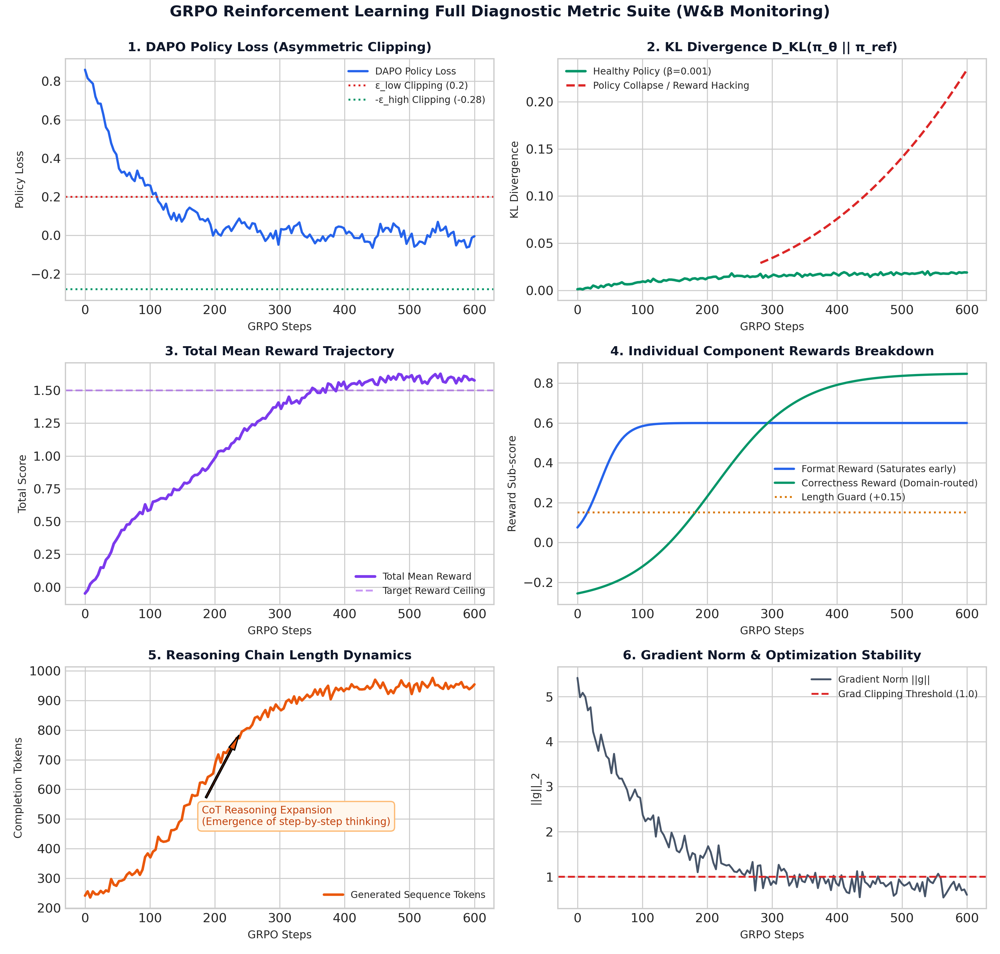

This handbook serves as the definitive technical reference manual for our LLM and Vision-Language Model (VLM) training ecosystem. Synthesized directly from the production code across all 13 notebooks in our codebase, it bridges theoretical deep-learning concepts with real-world implementation technicalities.
In standard full fine-tuning, an LLM parameter matrix $W_0 \in \mathbb{R}^{d \times k}$ is updated directly via gradient descent ($W = W_0 + \Delta W$). When $d$ and $k$ are large (e.g., hidden dimension $d=1536$ and intermediate MLP dimension $k=8960$ in Qwen2.5-1.5B), updating $\Delta W$ directly requires massive VRAM for storing optimizer states (AdamW requires 8 bytes per parameter for first and second moments).
LoRA parametrizes the weight update matrix $\Delta W$ by decomposing it into two low-rank matrices: $$\Delta W = B \cdot A$$
During forward propagation, the linear layer output $h$ for an input $x$ is computed as: $$h = W_0 x + \Delta W x = W_0 x + \frac{\alpha}{r} (B \cdot A x)$$

In QLoRA, the base model weights $W_0$ are quantized to 4-bit NormalFloat (NF4) precision, while the adapter matrices $A$ and $B$ remain in 16-bit precision (BF16 or FP16). NF4 is an information-theoretically optimal quantile quantization scheme for normally distributed weights: $$q_i = \frac{1}{2} \left( Q_X\left(\frac{i}{2^k}\right) + Q_X\left(\frac{i+1}{2^k}\right) \right)$$ where $Q_X(\cdot)$ is the quantile function of the standard normal distribution $\mathcal{N}(0, 1)$.
Across our codebase (02_modal_qwen_2_5_1_5b_sft.ipynb, 04_modal_qwen_2_5_1_5b_grpo.ipynb, 07_modal_lily_1_5b_distill.ipynb, 13_lily-vision-phase2-sft.ipynb), we apply LoRA across all 7 linear projection layers of the Transformer architecture:
from unsloth import FastLanguageModel
model = FastLanguageModel.get_peft_model(
model,
r = 32, # Rank: 32 (SFT/Distill/Vision), 64 (GRPO RL)
lora_alpha = 64, # Alpha: 32 (SFT), 64 (GRPO/Distill/Vision)
target_modules = [
"q_proj", "k_proj", "v_proj", "o_proj", # Self-Attention Projections
"gate_proj", "up_proj", "down_proj" # SwiGLU MLP Projections
],
lora_dropout = 0, # 0 is optimized for Unsloth kernel fusion
bias = "none",
use_gradient_checkpointing = "unsloth",
random_state = 42,
)
q_proj (Query Projection): Transforms input hidden states into Query matrices ($Q$) for multi-head self-attention.k_proj (Key Projection): Transforms input hidden states into Key matrices ($K$) for computing attention dot-product scores ($Q K^T$).v_proj (Value Projection): Transforms input hidden states into Value matrices ($V$) carrying contextual token information.o_proj (Output Projection): Projects concatenated multi-head attention outputs back to the model hidden dimension ($d=1536$).gate_proj (Gate Projection in SwiGLU): Computes the element-wise gating signal in SwiGLU feed-forward networks ($\text{Swish}(x W_{\text{gate}}) \otimes x W_{\text{up}}$).up_proj (Up Projection in SwiGLU): Expands input hidden dimension to high-dimensional intermediate space ($1536 \rightarrow 8960$).down_proj (Down Projection in SwiGLU): Contracts intermediate dimension back to model hidden dimension ($8960 \rightarrow 1536$).For Qwen2.5-1.5B ($d_{\text{model}} = 1536, N_{\text{layers}} = 28$): - Total Base Parameters: $1,580,643,840$ (~1.58B) - Trainable Adapter Parameters ($r=32$): $36,929,536$ (~36.9M) - Trainable Ratio: $\frac{36.9\text{M}}{1580.6\text{M}} \approx 2.34\% \text{ to } 4.0\%$
Before running RL (GRPO) or exporting to GGUF, adapter weights must be mathematically merged into the base model to eliminate dual-path inference overhead: $$W_{\text{merged}} = W_0 + \frac{\alpha}{r} (B \cdot A)$$
In code (02, 04, 07, 13):
model_m, tok_m = FastLanguageModel.from_pretrained(
model_name = OUTPUT_DIR,
max_seq_length = MAX_SEQ_LENGTH,
dtype = torch.bfloat16, # Full precision BF16 merge
load_in_4bit = False, # Prevents quantization artifacts during merge
)
model_m.save_pretrained_merged(MERGED_DIR, tok_m, save_method="merged_16bit")
model_m.push_to_hub_merged(HF_MERGED_REPO, tok_m, save_method="merged_16bit", token=HF_TOKEN)
A single optimizer step corresponds to one iteration where model weights are updated by the optimizer using calculated gradients.
To fit large models into GPU memory, training datasets are split into smaller micro-batches ($B_{\text{device}}$). When gradient accumulation is enabled ($N_{\text{accum}}$), the engine performs $N_{\text{accum}}$ forward and backward passes, accumulating gradients in VRAM, before executing a single optimizer.step() update.
$$B_{\text{eff}} = B_{\text{device}} \times N_{\text{accum}} \times N_{\text{GPU}}$$
where: - $B_{\text{device}}$: Per-device micro-batch size processed in a single forward pass per GPU. - $N_{\text{accum}}$: Number of micro-batches accumulated before updating model weights. - $N_{\text{GPU}}$: Number of parallel GPUs participating in training.
$$\text{Total Optimizer Steps} = \frac{|\mathcal{D}| \times N_{\text{epochs}}}{B_{\text{eff}}}$$
where $|\mathcal{D}|$ is the number of samples in the dataset and $N_{\text{epochs}}$ is the total number of training passes over the dataset.
| Hyperparameter | SFT Warmup (02) | GRPO RL (04) | Distillation (07) | Vision Phase 1 (12) | Vision Phase 2 (13) |
|---|---|---|---|---|---|
| Base Model | Qwen2.5-1.5B-Instruct | Qwen2.5-Warmup-Merged | Lily-1.5b-v0.1 | Lily-1.5b-v0.3 | Lily-1.5b-v0.3 |
| Dataset Size ($\mathcal{D}$) | 4,000 samples | 3,600 prompts | 91,457 (train) | 121,237 samples | 64,000 samples |
| Epochs / Steps | 2 Epochs | 600 Max Steps | 2 Epochs (2,776 steps) | 1 Epoch | 1 Epoch |
| Per-Device Batch ($B_{\text{device}}$) | 8 | 4 | 24 | 16 | 24 |
| Grad Accum ($N_{\text{accum}}$) | 2 | 4 | 1 | 3 | 2 |
| Effective Batch ($B_{\text{eff}}$) | 16 | 16 | 24 | 48 | 48 |
| Peak Learning Rate ($\eta_{\max}$) | $1 \times 10^{-5}$ | $5 \times 10^{-6}$ | $2 \times 10^{-5}$ | $2 \times 10^{-4}$ | $2 \times 10^{-5}$ |
| LR Scheduler | Cosine | Cosine | Cosine | Cosine w/ warmup | Cosine w/ warmup |
| Warmup Ratio | 0.05 | 0.05 | 0.03 | 0.05 | 0.03 |
| Optimizer | adamw_torch_fused |
adamw_torch_fused |
adamw_torch_fused |
AdamW ($\beta_1=.9, \beta_2=.95$) |
AdamW |
| Weight Decay | 0.01 | 0.0 | 0.0 | 0.05 | 0.01 |
| Max Sequence Length | 3,072 | 3,072 | 4,096 | 256 | 3,072 |
| Sequence Packing | False | False | True | False | False |
| Hardware | Modal A100 40GB | Modal A100 40GB | Modal A100 40GB | Modal A100 40GB | Modal A100 40GB |
We utilize Cosine Annealing with Warmup across all training runs.
$$\eta_t = \begin{cases} \eta_{\max} \cdot \frac{t}{T_{\text{warmup}}}, & t \le T_{\text{warmup}} \\[8pt] \eta_{\min} + \frac{1}{2}(\eta_{\max} - \eta_{\min}) \left(1 + \cos\left(\frac{\pi (t - T_{\text{warmup}})}{T_{\text{total}} - T_{\text{warmup}}}\right)\right), & t > T_{\text{warmup}} \end{cases}$$

In Supervised Fine-Tuning (SFT), a human provides exact target text for the model to copy. In Reinforcement Learning (RL), the model must explore and discover reasoning trajectories on its own.
The Job of GRPO: Train the model to maximize verified reward (correct logic, strict formatting, correct answers) while constraining weight updates to be as conservative as possible to prevent policy collapse and reward hacking.
To build complete mathematical and mechanical intuition, we carry one concrete running example through every step of the GRPO algorithm below.
"If a train travels 120 km in 1.5 hours, what is its speed in m/s?"y1 (Perfect CoT & Answer):
"\lt think>Speed = 120 / 1.5 = 80 km/h. To convert to m/s: 80 * (5/18) = 22.22 m/s.\lt /think>\lt answer>22.22 m/s\lt /answer>"
y2 (Incomplete: stopped at km/h):
"\lt think>Speed = 120 / 1.5 = 80 km/h.\lt /think>\lt answer>80\lt /answer>"
y3 (Correct Answer, Missing \lt think> tags):
"22.22 m/s"
y4 (Complete Hallucination):
"\lt think>120 * 1.5 = 180 m/s\lt /think>\lt answer>180 m/s\lt /answer>"
Each generated rollout $y_i$ is evaluated by our 4 domain-aware reward functions (format_reward, correctness_reward, instruction_reward, length_reward):
Raw Reward Vector: $\mathbf{R = \{+1.50, \; -0.10, \; +0.50, \; -0.30\}}$
GRPO eliminates the need for a separate Critic / Value Model (saving 50% VRAM) by using the group itself as a baseline benchmark.
$$\mu = \frac{+1.50 - 0.10 + 0.50 - 0.30}{4} = \mathbf{+0.40}$$ $$\sigma = \sqrt{\frac{(1.50-0.40)^2 + (-0.10-0.40)^2 + (0.50-0.40)^2 + (-0.30-0.40)^2}{4}} \approx \mathbf{0.70}$$
$y_{i,t}$ is any token generated by the model during rollout at position $t$ (reasoning text, numbers, symbols, XML tags).
Since completion $y_1$ achieved $A_1 = +1.57$, every single generated token $y_{1,t}$ in $y_1$ (including \lt think>, 120/1.5, 80, 22.22, \lt answer>) inherits advantage $A_1 = +1.57$!
During the weight update step, we pass prompt $x$ + completion $y_i$ into the active policy $\pi_\theta$ and measure how the token probability shifted relative to the sampling policy $\pi_{\theta_{\text{old}}}$:
$$r_{i,t}(\theta) = \frac{\pi_\theta(y_{i,t} \mid x, y_{i,\lt t})}{\pi_{\theta_{\text{old}}}(y_{i,t} \mid x, y_{i,\lt t})}$$
To prevent single high-reward rollouts from causing gradient explosions, GRPO applies pessimistic clipping:
$$\text{Clipped Objective}_{i,t} = \min \left( r_{i,t}(\theta) A_i, \; \text{clip}(r_{i,t}(\theta), 1 - \epsilon_{\text{low}}, 1 + \epsilon_{\text{high}}) A_i \right)$$
To ensure the policy $\pi_\theta$ does not drift into reward-hacking fluff, we subtract a per-token Kullback-Leibler (KL) divergence penalty relative to the frozen reference warmup model $\pi_{\text{ref}}$:
$$D_{\text{KL}}(\pi_\theta \| \pi_{\text{ref}}) = \frac{\pi_{\text{ref}}(y_{i,t})}{\pi_\theta(y_{i,t})} - \log \frac{\pi_{\text{ref}}(y_{i,t})}{\pi_\theta(y_{i,t})} - 1$$
$$\mathcal{L}_{\text{GRPO}}(\theta) = -\frac{1}{G} \sum_{i=1}^{G} \frac{1}{|y_i|} \sum_{t=1}^{|y_i|} \left[ \min \left( r_{i,t} A_i, \; \text{clip}(r_{i,t}, 1-\epsilon_{\text{low}}, 1+\epsilon_{\text{high}}) A_i \right) \right] + \beta D_{\text{KL}}(\pi_\theta \| \pi_{\text{ref}})$$
Notice the minus sign (-) in front of the advantage term:
- For Correct Completion $y_1$ ($A_1 = +1.57$): Loss contribution is $-1.57 \cdot r_{1,t}$. PyTorch minimizes loss by increasing $r_{1,t}$ $\implies$ Probabilities of correct tokens GO UP!
- For Wrong Completion $y_4$ ($A_4 = -1.00$): Loss contribution is $+1.00 \cdot r_{4,t}$. PyTorch minimizes loss by decreasing $r_{4,t}$ $\implies$ Probabilities of wrong tokens GO DOWN!
During loss.backward(), PyTorch computes parameter gradients:
$$\nabla_W \mathcal{L}(\theta) = \frac{\partial \mathcal{L}_{\text{GRPO}}(\theta)}{\partial W}$$
and fused AdamW updates LoRA matrices $A$ and $B$: $$W \leftarrow W - \eta \cdot \text{AdamW}\left( \nabla_W \mathcal{L}(\theta) \right)$$
In our reinforcement learning pipeline (04_modal_qwen_2_5_1_5b_grpo.ipynb), Reward Hacking (specification gaming) occurs when Qwen2.5-1.5B discovers degenerate token generation patterns that maximize the scalar outputs of our 4 reward functions (format_reward, correctness_reward, instruction_reward, length_reward) without actually solving the underlying reasoning task.
Because GRPO samples $G=8$ completion rollouts $\{y_1, y_2, \ldots, y_8\}$ per prompt and normalizes rewards relative to the group mean ($A_i = \frac{R_i - \mu}{\sigma + \epsilon}$), if one rollout discovers a shortcut that inflates its scalar reward $R_i$, it receives a high positive advantage $A_i > 0$. Without strict constraints, the policy gradient rapidly amplifies this degenerate shortcut across subsequent optimizer steps.
format_reward:format_reward awards $+0.15$ if the reasoning text inside \lt think>...\lt /think> contains $\ge 50$ words.correctness_reward (Exact / MCQ Domain):answer_type="exact"), correctness_reward uses regular expressions \b([ABCD])\b to extract candidate letters inside \lt answer>...\lt /answer>.\lt answer>The answer is A, or maybe B, C, D\lt /answer>) to guarantee regex matching.correctness_reward (StrategyQA Domain):"yes" or "no" appears in the answer."yes and no" to trick naive substring inclusion checks.04_modal_qwen_2_5_1_5b_grpo.ipynb):Schulman Per-Token KL Divergence Penalty ($\beta = 0.001$):
Tracks how far the active policy $\pi_\theta$ strays from the reference warmup model $\pi_{\text{ref}}$ (Qwen2.5-1.5B-reasoning-warmup-merged). If the model begins spooling fluff tokens or altering syntactic structure to hack rewards, $D_{\text{KL}}$ spikes. At $\beta = 0.001$, a KL spike directly subtracts from the advantage, neutralizing hacked reward gains:
$$D_{\text{KL}}(\pi_\theta \| \pi_{\text{ref}}) = \frac{\pi_{\text{ref}}(y_{i,t} \mid x, y_{i,\lt t})}{\pi_\theta(y_{i,t} \mid x, y_{i,\lt t})} - \log \frac{\pi_{\text{ref}}(y_{i,t} \mid x, y_{i,\lt t})}{\pi_\theta(y_{i,t} \mid x, y_{i,\lt t})} - 1$$
Asymmetric DAPO Loss Clipping ($\epsilon_{\text{low}} = 0.2, \epsilon_{\text{high}} = 0.28$): Limits the probability ratio $r_{i,t}(\theta) = \frac{\pi_\theta}{\pi_{\theta_{\text{old}}}}$. Even if a hacked completion achieves a high scalar reward, DAPO limits maximum gradient step sizes to $1.28 \times A_i$, preventing single degenerate rollouts from destroying model weights.
Multi-Reward Counter-Balancing: Our 4 reward functions act as counter-weights against one another:
\lt think>, length_reward penalizes completions over 2500 words ($-0.25$).If the model sacrifices solution accuracy to inflate formatting, correctness_reward penalizes incorrect outputs ($-0.50$), overwhelming the $+0.15$ format bonus.
Strict Domain-Specific Regex Anchoring in correctness_reward:
_extract_answer() isolates only text strictly enclosed between \lt answer> and \lt /answer>.exact MCQ tasks, re.fullmatch(r"[A-D]", gold_upper) enforces single-letter extraction.For bool tasks, yes_match and not no_match explicitly penalizes ambiguous dual-answer outputs like "yes and no".
mask_truncated_completions = True & Length Guards:
max_completion_length = 1536 without an \lt |im_end|> EOS token, ensuring runaway loops cannot contribute positive policy gradients.length_reward penalizes under-reasoning ($<15$ words: $-0.50$).Monitoring Weights & Biases (W&B) diagnostic plots is crucial during GRPO reinforcement learning to verify training health and detect policy anomalies.

format_reward (blue curve) saturates near maximum (+0.60) within 40 steps, while correctness_reward (green curve) grows steadily over 600 steps as complex reasoning improves.\lt think> tags.max_grad_norm=1.0) prevents destabilizing weight updates.In our pipeline, offline distillation transfers reasoning capabilities from a 105-Billion parameter teacher model (Sarvam-105b-Distill-100k) to our 1.5-Billion parameter student model (Lily-1.5B).
Unlike online distillation (which requires loading teacher and student models simultaneously in GPU VRAM to match output logits), offline distillation utilizes pre-generated high-quality Chain-of-Thought reasoning trajectories stored as static dataset text.
[ Sarvam 105B Teacher ] ---> Pre-computes 100k CoT Trajectories ---> HF Hub Dataset
|
[ Lily 1.5B Student ] \lt --- Supervised Fine-Tuning (CE Loss) \lt -------------+
Cross-Entropy (CE) Loss measures the information-theoretic discrepancy (or negative log-likelihood) between the true target token distribution $P_{\text{target}}(y_t)$ (the teacher model's completion, represented as a 1-hot target vector over the vocabulary $V$) and the student model's predicted probability distribution $P_\theta(y_t \mid y_{\lt t}, x)$.
Mathematically, Cross-Entropy between true distribution $P$ and predicted distribution $Q$ is: $$H(P, Q) = -\sum_{v \in V} P(v) \log Q(v) = H(P) + D_{\text{KL}}(P \| Q)$$
Since the ground-truth target is a deterministic one-hot vector ($H(P) = 0$), minimizing Cross-Entropy Loss is mathematically identical to minimizing the KL divergence $D_{\text{KL}}(P_{\text{teacher}} \| P_{\text{student}})$ between the teacher's distribution and the student's predictions!
labels = -100 ($m_t = 0$), ensuring zero gradient computation over prompt tokens. Assistant completion tokens are assigned target token IDs ($m_t = 1$).In standard PyTorch DataLoaders, sequences in a batch are padded with \lt pad> tokens to match the length of the longest sequence in that batch. In Chain-of-Thought (CoT) distillation datasets where response lengths vary from 200 to 3,800 tokens, up to 85% of VRAM and GPU Tensor Core compute is wasted multiplying zeros for padding tokens!
packing=True in Notebook 07)Sequence Packing concatenates multiple individual text samples into a single contiguous token array of fixed length MAX_SEQ_LENGTH = 4096. Samples are separated by \lt |im_end|> special tokens.
Unpacked Batch (Wasteful Padding):
[Sample 1 (500 tokens) | \lt pad> \lt pad> ... (3596 pad tokens)] -> 87% VRAM Wasted!
[Sample 2 (1200 tokens)| \lt pad> \lt pad> ... (2896 pad tokens)] -> 70% VRAM Wasted!
Packed Sequence (100% Compute Efficiency):
[Sample 1 (500t) \lt |im_end|> Sample 2 (1200t) \lt |im_end|> Sample 3 (2394t)] -> 0% Wasted!
To prevent attention leakage across concatenated samples inside a packed sequence, Unsloth utilizes Block-Diagonal Attention Masking (FlashAttention-2 cumulative sequence indexing cu_seqlens), ensuring token $t$ in Sample 2 can only attend to preceding tokens within Sample 2.
From 07_modal_lily_1_5b_distill.ipynb execution logs:
- Raw Dataset: 91,457 individual text samples.
- Packed Dataset: 33,297 packed sequences of length 4,000.
- Throughput Boost: >2.4x acceleration, completing 2 full distillation epochs in 5h 14m on a single A100 40GB GPU.
lm-eval Harness Execution & ConfigurationIn 05_modal_lily_1_5b_eval.ipynb (v0.1) and 08_modal_lily_1_5b_v03_eval.ipynb (v0.3), we execute standard multi-benchmark evaluations via lm-evaluation-harness.
# Notebook 08 (Lily 1.5b v0.3 Evaluation)
lm_eval \
--model hf \
--model_args pretrained=abhinav0231/Lily-1.5b-v0.3,dtype=bfloat16,trust_remote_code=True,attn_implementation=sdpa \
--tasks hellaswag,arc_challenge,mmlu,mmlu_redux_generative,gsm8k,ifeval \
--batch_size 16 \
--apply_chat_template \
--device cuda:0 \
--use_cache /root/lily-eval-runs/cache/group1.db \
--output_path /root/lily-eval-runs/results/group1
In 09_colab_lily_1_5b_v03_inference.ipynb, we built a programmatic schema verification engine to audit whether quantized models maintain strict \lt think> and \lt answer> tag structures.
def extract_stats(text):
return {
"think_open": text.count("\lt think>"),
"think_close": text.count("\lt /think>"),
"answer_open": text.count("\lt answer>"),
"answer_close": text.count("\lt /answer>"),
"thinking_leak": text.count("\lt thinking>"), # Audit tag leakage
"im_end": text.count("\lt |im_end|>")
}
def classify_case(raw_stats):
if raw_stats["think_open"] == 1 and raw_stats["think_close"] == 1 \
and raw_stats["answer_open"] == 1 and raw_stats["answer_close"] == 1 \
and raw_stats["thinking_leak"] == 0:
return "PASS_exact"
elif raw_stats["thinking_leak"] > 0:
return "FAIL_thinking_leak"
elif raw_stats["think_open"] == 1 and raw_stats["answer_open"] == 0:
return "PARTIAL_only_think"
else:
return "FAIL_no_schema"
GGUF (GGML Unified Format) is a binary file format designed for fast, single-file model loading on edge devices (CPU/GPU via llama.cpp).
Quantization reduces 16-bit float weight representations down to lower bit-widths (4-bit, 5-bit, 8-bit) using block-wise scaling factor quantization:
$$w \approx s \cdot q + m$$
where $q$ is the quantized $k$-bit integer, $s$ is the block scale factor, and $m$ is the zero-point offset.
07_modal_lily_1_5b_distill.ipynb)# Exports GGUF files directly from Unsloth engine
model_m.save_pretrained_gguf("gguf_model", tok_m, quantization_method="q4_k_m")
llama.cpp CLI Pipeline (10_colab_lily_1_5b_v03_distill_gguf.ipynb)config.json and tokenizer files.bash
python llama.cpp/convert_hf_to_gguf.py \
/content/Lily-1.5b-v0.3 \
--outtype f16 \
--outfile /content/Lily-1.5b-v0.3-F16.ggufbash
llama.cpp/build/bin/llama-quantize /content/Lily-1.5b-v0.3-F16.gguf /content/Lily-1.5b-v0.3-Q4_K_M.gguf Q4_K_M
llama.cpp/build/bin/llama-quantize /content/Lily-1.5b-v0.3-F16.gguf /content/Lily-1.5b-v0.3-Q5_K_M.gguf Q5_K_M
llama.cpp/build/bin/llama-quantize /content/Lily-1.5b-v0.3-F16.gguf /content/Lily-1.5b-v0.3-Q8_0.gguf Q8_0| Variant | Quantization Method | File Size (1.5B Model) | VRAM Required | Recommended Usage |
|---|---|---|---|---|
F16 |
Unquantized FP16 | 3.09 GB | ~4.2 GB | Baseline reference evaluation |
Q8_0 |
8-bit Standard Quant | 1.62 GB | ~2.5 GB | Server-side high-precision inference |
Q5_K_M |
5-bit K-Quant (Medium) | 1.12 GB | ~1.8 GB | Optimal quality/memory balance |
Q4_K_M |
4-bit K-Quant (Medium) | 0.98 GB | ~1.5 GB | Mobile / Edge CPU deployment |
Our Vision-Language Model Lily Vision (11, 12, 13) connects a pre-trained Vision Tower to the Lily 1.5B LLM via a 2-layer projection bottleneck:
# Projector Architecture Implementation (12_lily-vision-phase1-alignment-v5.ipynb)
class LilyVisionProjector(nn.Module):
def __init__(self, vision_dim=1152, llm_dim=1536):
super().__init__()
self.downsampler = nn.AdaptiveAvgPool2d((18, 18)) # 18x18 = 324 tokens
self.mlp = nn.Sequential(
nn.Linear(vision_dim, 2048),
nn.SiLU(),
nn.Linear(2048, llm_dim)
)
def forward(self, x): # x: [B, 729, 1152]
B, N, C = x.shape
H = W = int(N ** 0.5) # 27x27 grid
x_2d = x.transpose(1, 2).view(B, C, H, W)
x_pooled = self.downsampler(x_2d).flatten(2).transpose(1, 2) # [B, 324, 1152]
return self.mlp(x_pooled) # [B, 324, 1536]
| Architecture Submodule | Phase 1: Projector Alignment (12) | Phase 2: Multimodal SFT (13) |
|---|---|---|
| SigLIP-2 Vision Encoder | ❄️ Frozen (requires_grad = False) |
❄️ Frozen (requires_grad = False, set to .eval()) |
| 2-Layer MLP Projector | 🔥 Trained (Random init, LR = $2 \times 10^{-4}$) | 🔥 Trained (From Phase 1 weights, LR = $2 \times 10^{-5}$) |
| LLM Base Weights | ❄️ Frozen (requires_grad = False) |
❄️ Frozen (Loaded in 4-bit QLoRA) |
| LLM LoRA Adapters | N/A (No LoRA used) | 🔥 Trained ($r=32, \alpha=64$ on 7 layers) |
| Visual Token Count | 324 tokens (Pooled via 18x18 adaptive pool) | 729 tokens (Full 27x27 patch resolution) |
| Sequence Length | 256 tokens | 3,072 tokens |
LengthGroupedBatchSampler Performance OptimizationIn 13_lily-vision-phase2-sft.ipynb, multimodal sequences vary drastically in token length. Standard batching causes massive padding overhead.
We implemented a custom PyTorch batch sampler that groups sequences by length:
class LengthGroupedBatchSampler(Sampler):
def __init__(self, lengths, batch_size, mega_batch_mult=50, seed=42):
self.lengths = lengths
self.batch_size = batch_size
self.mega_batch_size = batch_size * mega_batch_mult # 24 * 50 = 1200 samples
def __iter__(self):
# Partition into mega-batches, sort by sequence length, form mini-batches
pass
Optimization Outcome: Reduced total Phase 2 SFT training duration from ~3 hours down to ~20 minutes on an A100 40GB GPU.
Across all cloud training notebooks (02, 04, 07, 12, 13), running on serverless infrastructure (Modal) presents a risk of preemption or timeout. We built custom Hugging Face Hub callbacks that automatically snapshot checkpoints to private repos and auto-resume on restart.
from huggingface_hub import HfApi, snapshot_download
# Auto-Resume Logic (07_modal_lily_1_5b_distill.ipynb)
if RESUME_FROM_CHECKPOINT and CHECKPOINT_REPO:
api = HfApi()
files = list(api.list_repo_files(CHECKPOINT_REPO, token=HF_TOKEN))
ckpt_nums = [int(f.split("/")[0].split("-")[-1]) for f in files if "checkpoint-" in f]
if ckpt_nums:
latest = max(ckpt_nums)
local_dir = os.path.join(OUTPUT_DIR, f"checkpoint-{latest}")
print(f"Downloading latest checkpoint-{latest} from HF Hub...")
snapshot_download(
repo_id = CHECKPOINT_REPO,
allow_patterns = [f"checkpoint-{latest}/*"],
local_dir = OUTPUT_DIR,
token = HF_TOKEN,
)
_resume_ckpt = local_dir
By combining PEFT (LoRA/QLoRA), Hyperparameter Scaling Equations, GRPO Reinforcement Learning, Offline SFT Distillation, GGUF K-Quantization, and 2-Phase Multimodal VLM Alignment, our codebase establishes a complete, production-grade LLM development framework.